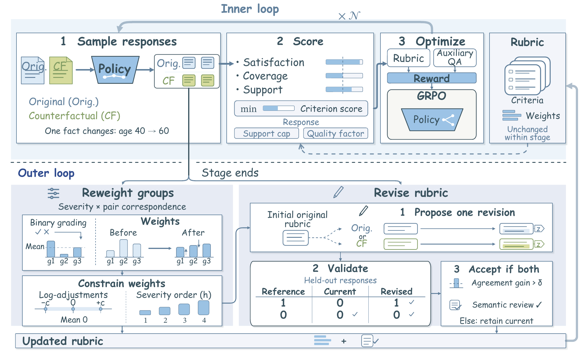

Evidence-aware policy optimization
Original and counterfactual prompts differ in one task-relevant fact. Criterion credit depends on whether the response covers and supports the required content.
Research project
Nanyang Technological University
Overview
Rubric judges can award credit even when a response omits the information a criterion requires. MetaRubric addresses this “Vacuous Credit” by checking response evidence during policy optimization and adapting the rubric to observed errors.

Paper
Rubric-based reinforcement learning extends reward-driven optimization to open-ended tasks by assigning partial credit to individual response requirements. However, rubric judges can assign a high criterion score even when the information or action it requires is absent from the response, a failure mode we term Vacuous Credit. Such awards persist after the required information is removed and can reverse the sign of a response’s GRPO advantage.
To address this problem, we introduce MetaRubric, which alternates evidence-aware policy optimization with response-guided rubric adaptation. We construct counterfactual counterparts by changing one task-relevant fact in each prompt. During policy optimization, credit is assigned only when the response contains sufficient evidence to satisfy the required rubric criterion. After each policy-optimization stage, current policy responses guide revisions to original and counterfactual criteria while preserving the meaning of the original prompt’s initial rubric as interpreted under each prompt’s facts. We also adapt criterion weights at stage boundaries to better address observed policy errors.
Across multiple backbones, MetaRubric improves PubMedQA accuracy by 6.00–20.40 percentage points over static-judge GRPO, with further gains on HealthBench-Hard and two multimodal medical benchmarks.
How it works
Original and counterfactual prompts differ in one task-relevant fact. Criterion credit depends on whether the response covers and supports the required content.
At each stage boundary, observed policy errors guide criterion weights and proposed revisions. Accepted revisions preserve the initial rubric’s requirements.